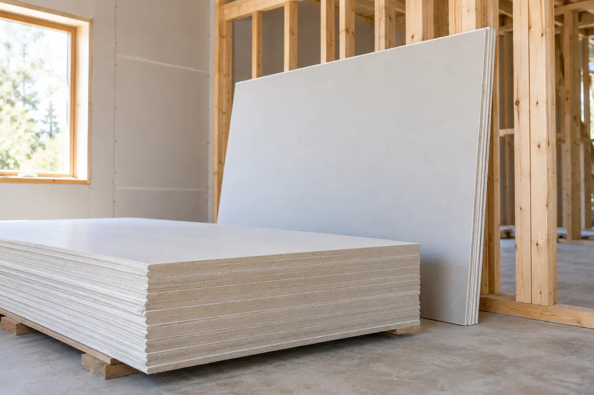
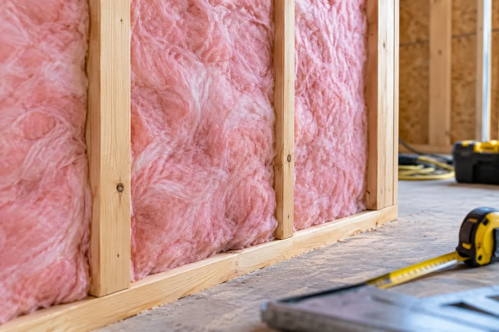
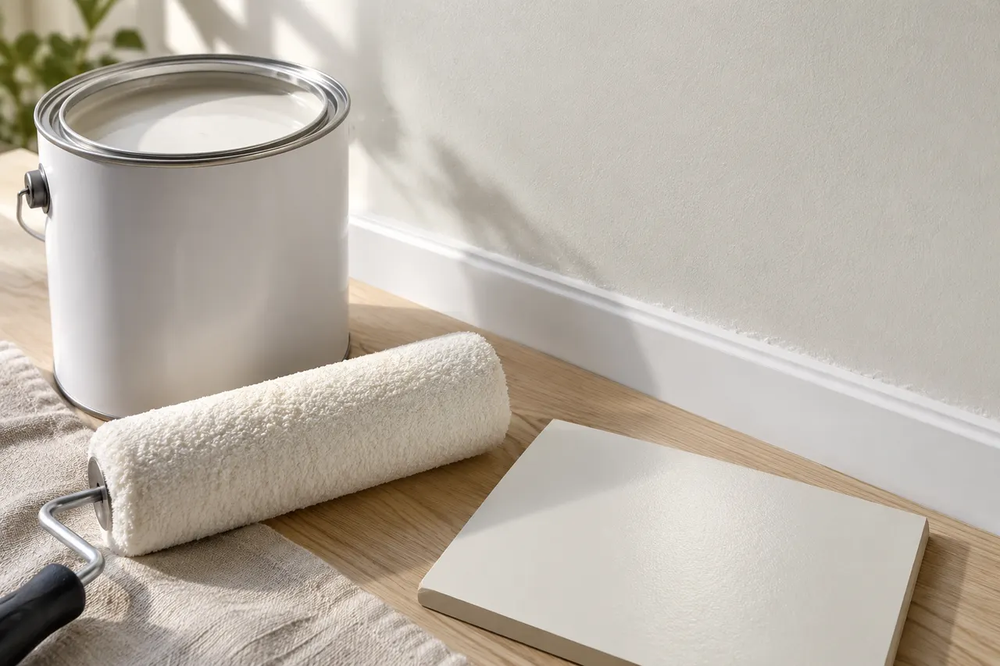

Texture matching needs a visible sample
Existing texture can vary with age and previous repairs. Agree on a sample and a practical finish boundary before expecting a patched area to blend under every lighting condition.
Irving, Texas
Drywall installation, repair and finishing for remodels, additions and property-damage reconstruction, including hanging, tape and float, texture matching, ceiling restoration and paint-ready surfaces.
Professional, reliable and detail-oriented from planning through completion. The craftsmanship and finished work exceeded expectations.
Read review summary · Source: Google →Top-notch communication, professionalism and attention to detail on a Jack-and-Jill bathroom renovation.
Read review summary · Source: Google →“Fair price for great work. Definitely recommend them for general repairs and maintenance.”
View public recommendation →Read customer feedback with the original source identified for every review.
View All Customer Reviews →Drywall repair and installation / Irving, Texas
For drywall repair and installation in Irving, this guide focuses on texture matching needs a visible sample. Use it to discuss the conditions at your property and compare the proposed work.
Existing texture can vary with age and previous repairs. Agree on a sample and a practical finish boundary before expecting a patched area to blend under every lighting condition.
If comparing proposals, put both on the same basis: measurements, preparation, exact product, accessories, finish limits and cleanup. A lower material price does not explain whether the complete installation responsibilities are equivalent.

USG Sheetrock
Gypsum panels provide interior wall and ceiling surfaces. Moisture-resistant and fire-rated products have specific applications.
Selection check
Match thickness, framing, fasteners and assembly requirements. Moisture resistance does not make a board waterproof or suitable for every wet location.
Use the selected panel documentation and applicable USG warranty; no universal term applies to every panel or wall assembly.

Owens Corning PINK Next Gen
Fiberglass batts fit selected wall, floor and ceiling cavities as part of the insulation assembly.
Selection check
Specify the required R-value, cavity depth and facing. Avoid gaps or compression and resolve moisture conditions before the cavity is closed.
Confirm the applicable product document. Insulation material coverage does not warrant the entire room or guarantee a utility-bill reduction.

Sherwin-Williams Duration Home
Interior acrylic coatings offer different sheens for walls and trim; preparation and the underlying surface affect the result.
Selection check
Select sheen, primer where required, color samples and repair boundaries. A paint-and-primer label does not eliminate every separate primer step.
The product lists a limited lifetime warranty. Read its remedy and exclusions; it is not a promise that every painted surface will remain unchanged for life.
Existing texture can vary with age and previous repairs. Bring photographs, dimensions and any relevant previous repair records to the discussion.
Compare gypsum wall and ceiling panels, fiberglass batt insulation, interior acrylic finish. Specify the selected components and the preparation they require.
Approve the texture sample before broad application. A lower material price does not explain whether the complete installation responsibilities are equivalent.
Align quantities, preparation, selected product and installation boundaries, then identify exclusions and owner-supplied items. Ask for differences to be explained in writing before deciding which proposal meets the intended result.
Approve the texture sample before broad application. The written scope should also identify the selected products, work boundaries, required trade coordination and approval steps for changes.
No. These are references for comparing product categories. Availability, suitability, the exact model and the actual supplier must be confirmed for the property. A reference does not imply certification, stock or a brand affiliation.
Manufacturer coverage: Terms apply to the exact product and eligible application. Material coverage, complete-system programs and installation workmanship are different obligations. Request the current written warranty and care instructions; a warranty term is not a guaranteed service life. Generic illustrations are original explanatory artwork, not branded packaging.
Discuss the conditions at your property.
Include the project address, relevant photos and your priorities.
Existing texture can vary with age and previous repairs. Agree on a sample and a practical finish boundary before expecting a patched area to blend under every lighting condition.
If comparing proposals, put both on the same basis: measurements, preparation, exact product, accessories, finish limits and cleanup. A lower material price does not explain whether the complete installation responsibilities are equivalent.
Scheduling, access, protection, materials, trade coordination, cleanup and any hidden conditions are reviewed before work begins.
Yes. We evaluate the existing finish and use the closest practical application method for orange peel, knockdown, hand texture or smooth-wall repairs. Exact matching can depend on the age and previous paint layers.
Yes. After the leak is corrected and the area is properly dried, damaged drywall and insulation can be removed and replaced, then taped, floated, textured, primed and painted as required by the repair scope.
Often yes. Localized holes, access cuts, cracks and damaged panels can usually be patched or replaced in sections when the surrounding drywall remains sound.
A complete scope may include measuring, hanging drywall, corner bead, tape, joint compound, multiple finish coats, sanding, texture, cleanup and preparation for primer and paint.
Yes. We can coordinate drywall installation and finishing for new walls, ceilings, remodels, additions, commercial spaces and multi-room reconstruction projects.
Yes. Luna General Contractors serves homes and businesses throughout Irving and nearby communities.
Start Your Project
Tell us about your property and the work you have in mind. We can discuss the scope, access, material selections and next steps.